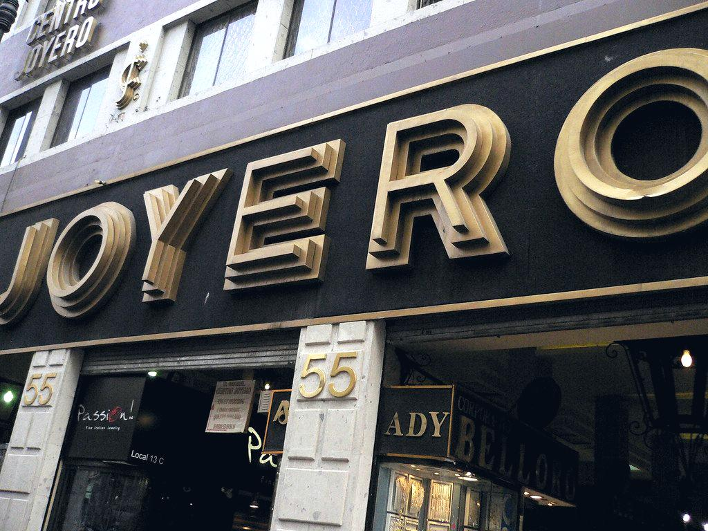

Glossaire de l'enseigne, de la signalétique et de l'impression
Le vocabulaire du secteur est un obstacle réel : difficile de comparer deux devis quand on ne sait pas ce que recouvre « adhésif coulé », « rétro-éclairage » ou « TLPE ». Voici les 39 termes qui reviennent le plus souvent, expliqués simplement.
Adhésif coulé (cast)
Film vinyle fabriqué par coulage, très fin et sans mémoire de forme. Il épouse les reliefs profonds sans se rétracter : c'est le seul film acceptable pour un covering de véhicule. Durée de vie 7 à 12 ans.
Adhésif calandré
Film vinyle obtenu par laminage à chaud, plus épais et plus économique, mais avec une mémoire de forme qui le fait revenir en arrière sur les courbes. Réservé aux surfaces planes.
Autorisation préalable d'enseigne
Démarche obligatoire en mairie (Cerfa n°14798) avant d'installer une enseigne dans une commune dotée d'un règlement local de publicité ou en secteur protégé. Délai d'instruction : 2 mois, 4 mois avec avis de l'Architecte des Bâtiments de France.
BAT (bon à tirer)
Épreuve finale validée et signée par le client avant lancement en fabrication. Elle engage les deux parties sur les dimensions, les couleurs et les matériaux.
Bâche mesh
Toile microperforée laissant passer environ 30 % de l'air. Obligatoire au-delà de 6 m² en façade ou sur échafaudage pour limiter la prise au vent.
Caisson lumineux
Enseigne en forme de boîte, en aluminium laqué, dont la face en plexiglas diffusant est éclairée de l'intérieur par des modules LED. Simple ou double face.
CACES R486
Certificat d'aptitude à la conduite en sécurité des plateformes élévatrices mobiles de personnel. Catégorie A pour les nacelles à élévation verticale, B pour les nacelles à élévation multidirectionnelle.
CMJN
Cyan, magenta, jaune, noir : le mode colorimétrique de l'impression. Tout fichier destiné à l'impression doit y être converti, le RVB étant réservé aux écrans.
Covering
Habillage total ou partiel d'un véhicule par des films adhésifs imprimés ou de couleur. On distingue le total covering, le semi-covering et le simple lettrage.
Dibond
Nom commercial d'un panneau composite formé de deux feuilles d'aluminium encadrant une âme polyéthylène. Léger, parfaitement plan, très utilisé en signalétique extérieure.
Doming
Résine polyuréthane transparente déposée sur un autocollant pour créer un effet bombé brillant, résistant aux rayures.
Drapeau (enseigne)
Enseigne posée perpendiculairement à la façade, particulièrement efficace pour capter le flux piéton dans les rues étroites.
ERP
Établissement recevant du public. Statut qui déclenche des obligations spécifiques d'accessibilité et de sécurité, dont une bonne part concerne directement la signalétique.
Flex
Film textile thermocollant découpé puis pressé sur un vêtement. Rendu lisse et opaque, idéal pour les noms, numéros et logos en aplat.
Flock (flocage)
Film textile thermocollant à surface veloutée, avec un léger relief. Plus doux que le flex, souvent utilisé pour les vêtements de sport.
Fond perdu
Marge de sécurité au-delà du format fini, sur laquelle le visuel se prolonge pour éviter tout liseré blanc après coupe. 5 mm en standard, 30 mm sur un ourlet de bâche.
ISO 7010
Norme internationale fixant les pictogrammes de sécurité — interdiction, obligation, avertissement, secours, incendie. Elle garantit une lecture identique dans tous les pays.
Laminage
Film de protection transparent appliqué sur une impression pour la protéger des UV, des rayures et du lavage. Indispensable en extérieur.
Lettres boîtier
Lettres en volume, constituées d'un dos, de joues et d'une face, éclairées par LED en rétro-éclairage (halo) ou en face lumineuse.
Lettres découpées
Lettres pleines découpées dans un panneau (aluminium, inox, PVC, plexiglas) puis fixées sur la façade, avec ou sans entretoises.
Microperforé (one way vision)
Film percé de milliers de micro-trous : le visuel est visible depuis l'extérieur, la transparence est conservée depuis l'intérieur. Le standard des vitrines et des vitres de véhicule.
Nacelle (PEMP)
Plateforme élévatrice mobile de personnel. Équipement normal du travail en hauteur, soumis à vérification générale périodique semestrielle.
Néon LED
Tube LED flexible imitant le néon traditionnel, sans gaz ni haute tension. Faible consommation, allumage instantané, sécurité renforcée.
Pantone
Nuancier de référence universel qui permet de désigner une couleur de manière identique entre laque, adhésif, impression et textile.
PLV
Publicité sur le lieu de vente : présentoirs, totems carton, stop-rayons, chevalets et tout support destiné à déclencher l'achat en magasin.
PMMA (plexiglas)
Polyméthacrylate de méthyle. Le plexiglas coulé jaunit beaucoup moins vite que l'extrudé : à exiger pour toute face lumineuse.
PMR
Personne à mobilité réduite. La signalétique PMR impose relief, braille, contraste supérieur à 70 % et pose entre 0,90 m et 1,30 m du sol.
PVC expansé (Forex)
Panneau plastique alvéolaire léger et économique, facile à découper. Il se voile au soleil au-delà d'un mètre : à réserver à l'intérieur ou au provisoire.
RAL
Nuancier européen des couleurs de laque et de peinture industrielle, utilisé pour le thermolaquage des structures d'enseignes.
RLP
Règlement local de publicité : document communal ou intercommunal qui encadre enseignes, préenseignes et publicité. Il conditionne l'obligation d'autorisation préalable.
Rétro-éclairage
Éclairage placé derrière la lettre ou le panneau, qui projette un halo lumineux sur la façade. Rendu haut de gamme, très prisé en centre-ville.
Sérigraphie
Impression par passage d'encre à travers un écran ajouré. Couleurs très couvrantes et grande durabilité, mais un écran par couleur : rentable à partir de 25 à 50 pièces.
Sublimation
Transfert d'encre passant directement à l'état gazeux pour pénétrer dans la fibre polyester. Rendu quadri sans relief ni craquelure.
Tampographie
Report d'encre par tampon souple, capable d'imprimer sur des surfaces courbes ou irrégulières. Technique de référence pour les stylos et petits objets.
TLPE
Taxe locale sur la publicité extérieure, due par l'exploitant du support et calculée au mètre carré. Exonération fréquente jusqu'à 7 m² cumulés. Déclaration avant le 1er mars.
Thermolaquage
Application de peinture en poudre polymérisée au four sur une pièce métallique. Finition très résistante aux UV et à la corrosion.
Totem
Support vertical autoportant implanté en entrée de site ou de zone d'activité, souvent lumineux et multi-enseignes.
Vectoriel
Fichier composé de courbes mathématiques (AI, EPS, PDF, SVG) et non de pixels. Agrandissable à l'infini, il pilote directement les machines de découpe et de gravure.
Vitrophanie
Ensemble des adhésifs appliqués sur une surface vitrée : lettrage, décor, film dépoli, microperforé, film solaire ou de sécurité.
Vous avez un projet de communication visuelle ?
Commerce, entreprise, artisan, profession libérale, collectivité : décrivez votre projet en 2 minutes. Nous le qualifions et le confions à des professionnels sélectionnés près de chez vous. Vous recevez des propositions comparables sous 48 heures, gratuitement et sans engagement.
Demander mon devis gratuit